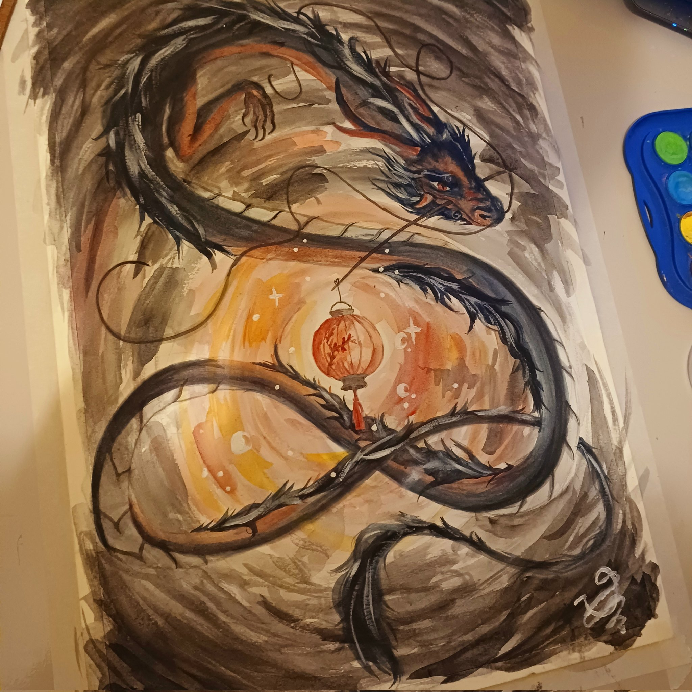

Leitura
Jogos
Desenho
Uma das atividades que eu mais pratico e uma das quais eu sou mais reconhecida desenhar.
Desde nova eu tenho contato com o mundo artistico por influencia do meu avô, Ronaldo Lopes, ele me influenciou a seguir passos semelhantes ao dele, porem, eu optei por criar a minha propria arte. Por mais que ela não seja perfeita, ainda me define.
Oque é Desenho
Desenho é uma forma de manifestação da arte, o artista transfere para o papel imagens e criações da sua imaginação. É basicamente uma composição bidimensional (algo que tem duas dimensões) constituída por linhas, pontos e forma. É diferente da pintura e da gravura em relação à técnica e o objetivo para o qual é criado
Meu estilo de Desenho
Dentre as inumeras tecnicas artisticas que existem para se pintar um quadro, eu procurei me especializar na arte realista e traço oriental, porem, sempre procuro aprender estilos novos como abstrato dentre outros.

Dragão estilo oriental feito em aquarela
.png)
MImikyu Desenho digital
Tecnicas que eu sei
- Aquarela- Arte que utiliza agua e tinta, foi o primeiro tipo de tecnica que eu usei para pintar efetivamente um desenho. Gera muito custo já que as folhas tem que ter uma gramatura maior e normalmente folhas desse tipo são um pouco mais caras.
- giz pastel oleoso- Arte que mistura textura e pintura, muita pigmentagção. Muito versatil e divertido de se usar, porem, dificil de se manusear apropriadamente sem que faça muita sujeira.
- Digital- Arte digitalizada, me especializando nessa area, extremamente versatil já que pode replicar mais tipos de arte artificialmente. Desvantagens: o tablet (meu dispositivo para desenhar) descarrega-
- Lapis e grafite- Material tradicional, muito bom. Um dos que eu mais gosto pois não exige muito, frequentemente desenho usando grafite para superar algum bloqueio criativo